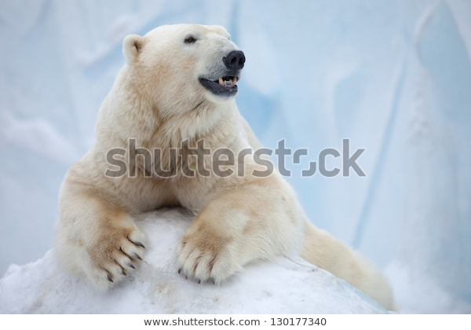

The polar bear (Ursus maritimus) is largely native to the Arctic Circle, comprised of the Arctic Ocean and the surrounding land masses and seas. They are the largest land carnivore currently in existence, rivaled by only the Kodiak bear. Although the sister species to the polar bear is the brown bear, polar bears have adapted to colder climates, with spcefic characteristics for moving across snow, open water, and sea ice, where they spend most of their time hunting down their primary source of food: seals. Due to climate change, its conservation status is currently Vulnerable, although population is difficult to estimate due to their remote location and small population densities.
There are many different names for the polar bear, some derived from translastions from the Inuit and Chukchi languages.
Adult male polar bears weigh between 350–700 kg (772–1,543 lb) and shoulder height of 122 to 160 cm (4 ft 0 in to 5 ft 3 in), with females about half that size. Their fur consists of a dense layer of underfur covered by an outer layer of guard hairs, which are actually transparent, though appear to be white to tan. Their white coat typically yellows with age.
